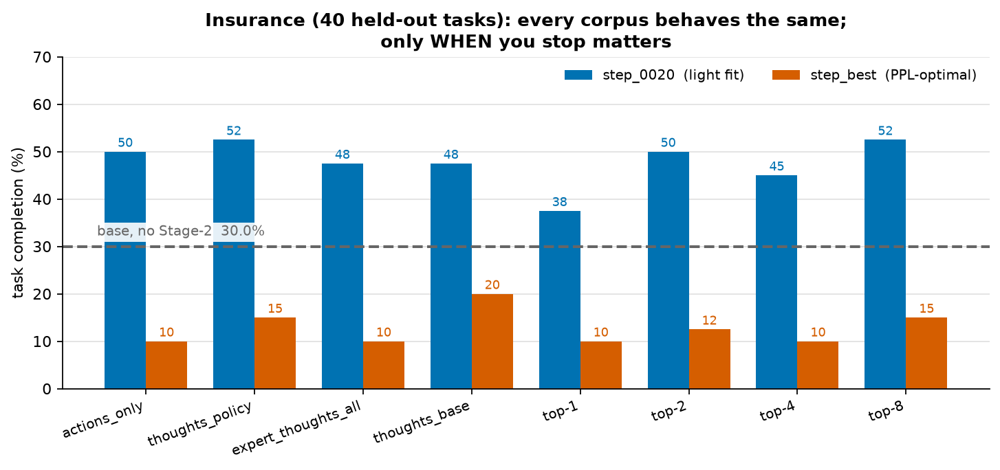
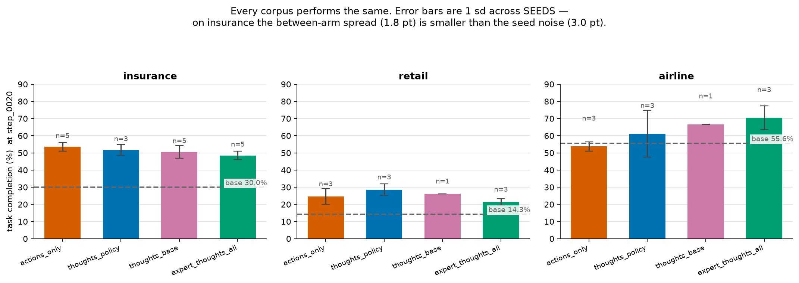
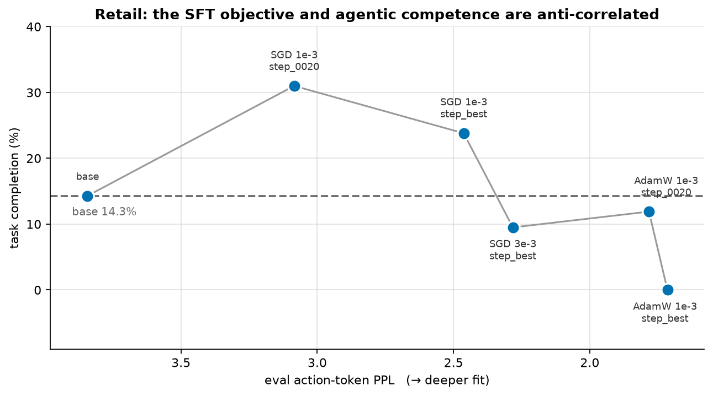
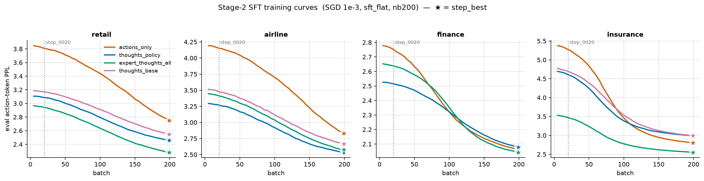
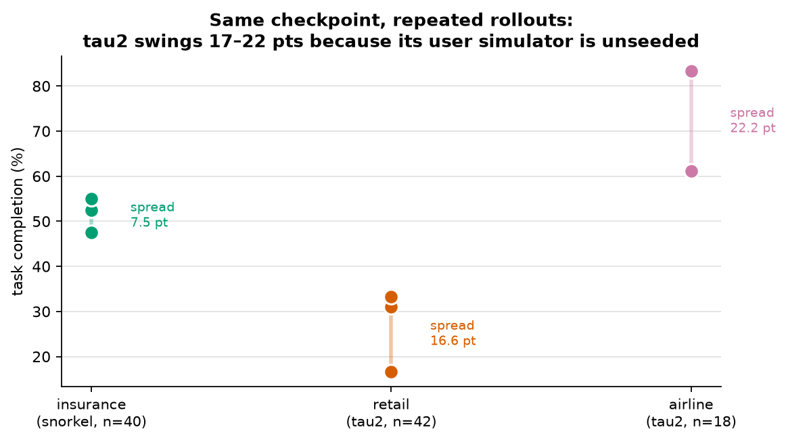

Qwen3-4B-Instruct-2507 · LoRA r8/a16 · SGD 1e-3 · sft_flat, 200 batches ×
32 steps · hide-observations · four domains (tau2 retail/airline, Snorkel finance/insurance).
Runs 2026-09-01 → 09-11. Full detail in notes/cc-12.0, cc-13.0,
cc-14.0, cc-15.0. All numbers below come from results/*.csv, regenerated by scripts/export_rollout_results.py and scripts/export_training_results.py.

step_0020, and 10–20 points
below it at step_best.Insurance is the domain used for every quantitative claim here, because it is the only one with the measurement precision to support one (§4). Base model, no Stage-2: 30.0% (12/40).

step_0020, error bars = 1 sd across
seeds. Every arm clears base in every domain, and within a domain the arms are
indistinguishable. n is the number of independent runs; bars with n=1 have no
error bar and should not be compared.Pooled over three seeds of thoughts_policy: step_0020 84/160 =
52.5% vs step_best 24/160 = 15.0%,
Fisher p = 1.1×10−12.
Variance decomposition across the eight arms: between-arm sd = 4.6 pt, within-arm (seed) sd = 3.1 pt, so the excess attributable to the choice of corpus is 3.4 pt against a 48% mean. Picking a corpus moves the result about as much as re-running one unchanged checkpoint under a different seed.

Two independent knobs — learning rate and optimiser — trace the same curve, which is what makes it a statement about fit depth rather than about either knob:
expert_thoughts_all fits
insurance 0.42 PPL better than thoughts_policy and rolls out slightly
worse.step_best — selected on eval perplexity —
is the wrong checkpoint in every domain we measured. Any selection rule based on the
Stage-2 objective picks the worse policy.

actions_only has no reasoning prefix). ★ marks each
arm's step_best. The dotted line marks step_0020, the checkpoint that
actually behaves best.The thought arms start markedly lower than actions_only — a thought in context
genuinely makes the expert's next action more predictable — and the gap persists to the end.
On the objective, thoughts clearly help. That advantage simply does not appear in rollouts.
| domain | actions_only | thoughts_policy | expert_thoughts_all | thoughts_base |
|---|---|---|---|---|
| retail | 2.7517 | 2.4625 | 2.2837 | 2.5499 |
| airline | 2.8307 | 2.5375 | 2.5772 | 2.6673 |
| finance | 2.0637 | 2.0800 | 2.0437 | — |
| insurance | 2.8049 | 2.9952 | 2.5750 | 2.9982 |
From a group_size 8 relabel we exported the best 1, 2, 4 and 8 candidates per
action — identical task coverage, only the number of distilled thoughts changing. Perplexity
improves monotonically with K and the total effect is negligible: retail 2.4454 → 2.4293 (K=1→4),
insurance 3.0170 → 3.0095 (K=1→8), a 0.0075 range across an 8× data increase.
Rollouts are indistinguishable (top-1 vs top-8, p = 0.261).
Best-of-1 is as good as keeping all eight.

τ²-bench drives its user turns with an external LLM simulator that we do not seed, so two runs of the same weights genuinely differ. The Snorkel gyms have no simulated user — only tools and a judge — and are near-deterministic given a seed (the residual ~2.5 pt is the judge flipping on a borderline answer).
| harness | n | noise on a fixed checkpoint | smallest detectable Δ | runs needed for a 5 pt effect |
|---|---|---|---|---|
| insurance (Snorkel) | 40 | sd 3.0 (measured over 18 seeded runs) | ~8 pt | 6 |
| retail (τ²) | 42 | sd 9.0 | ~18 pt | 51 |
| airline (τ²) | 18 | 22.2 pt; sd 13.6 for one arm across 3 seeds | ~25 pt | 77 |
| finance | 10 | floor — 9/10 runs scored 0 | none | — |
seed=42 reproduces the identical result — insurance agreed 40/40 on tasks
between "repeats". Our first repeat experiment measured nothing for exactly this reason.
Act-PRM needs logged expert demonstrations. We tested whether τ²-bench's telecom and banking domains can supply them, using a Claude teacher (Sonnet 5 unless noted) with a Haiku 4.5 user simulator.
| domain | teacher success | usable tasks | why it fails |
|---|---|---|---|
| retail (our working pool) | 46.5% | 53 / 114 | — |
| telecom | 0–5% | ~6 / 114 | Structural mismatch. Faults are injected on the user's device and the agent must talk the user through fixing them. One task expects exactly one action, toggle_roaming; our agent reasoned over account-side state, diagnosed a data cap, and sold a data refuel. Episodes are short (4.7 steps) — it fails fast and confidently. |
| banking | 9.6% | 16 / 76 | Escalation judgement. transfer_to_human_agents appears in 54% of successful episodes but 12% of failures. Failures over-work the problem instead (median 37 vs 28 steps). |
Neither is fixed by scale. On banking, Sonnet 4.6 scored 5.3%, Sonnet 5 9.6%, and Opus 4.8 — the most capable model available — 10.0%. All within noise of each other.
1−(1−p)8). The actual was 21%.
Success is strongly task-correlated, not independent: the per-task success
distribution is bimodal — 60 tasks scored 0/6 while one scored 7/8. Extra attempts
mostly re-solve the already-solvable tasks.
A prompt ablation telling the agent that transferring is a legitimate resolution did
not raise the failure-side escalation rate (8% vs a 12% baseline), which suggests
escalation is a marker of correctly recognising the task type rather than a lever
that produces success. The remaining untested lever is native tool-use:
every teacher run so far stringifies tools into the prompt and parses
<tool_call> blocks out of the reply, and we observed the harness rejecting
turns outright with "Your response contained no <tool_call> block."
Listed because several were reported before the data justified them.
| claim | why it fell |
|---|---|
| user-turns/episode is the collapse mechanism | Monotone between checkpoints, but within one, solved and failed episodes are identical (6.20 vs 6.22) or reversed (5.22 vs 6.39). |
| SGD makes train PPL worse | Two noisy single batches. Windowed, every run improves (2.42 → 1.79). |
retail step_0020 > step_best is a result | 31.0 vs 23.8 sits inside retail's own 16.6 pt same-checkpoint spread. |
| expert thoughts lift the whole curve | Called at 6/10 tasks; the full n=40 came in below thoughts_policy. |
| the Stage-1 corpus regression | Ablation was null — the old corpus rolls out inside the range the new one spans. |
actions_only-vs-base behavioural diff at b20 is the cheapest probe.step_0020 is the earliest checkpoint we
roll out; step_0010 exists and has never been evaluated.finqa split.Datasets:
mzio/aprm-sft-thoughts-{tau2-retail,tau2-airline,snorkel-finance,snorkel-insurance}-policy_best-adamw30-lp0
and the base-scored …-base_best-adamw30-lp0 counterparts on the Hugging Face Hub.
· ← back to the main post